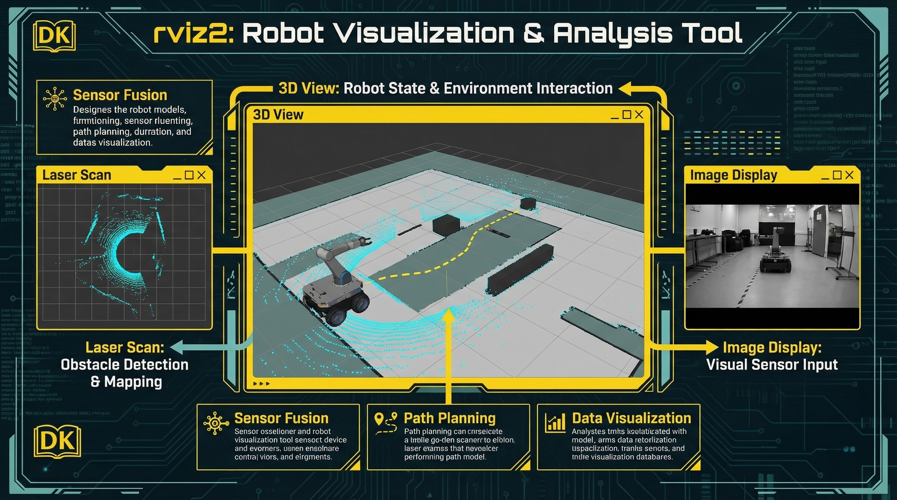

ROS2官方3D可视化工具 | 实时显示传感器数据 | 机器人模型展示
命令: rviz2 或 ros2 run rviz2 rviz2
Image
相机图像显示
/image_raw
LaserScan
激光雷达点云
/scan
PointCloud
3D点云显示
/points
Global Options > Fixed Frame: map | 设置参考坐标系用于所有显示
Ctrl+S / File > Save
保存当前配置
*.rviz 文件
Ctrl+O / File > Open
加载配置文件
复用可视化设置

常用插件: RobotModel(模型) / Path(路径) / Marker(标记) / TF(坐标系变换)
rviz2是调试ROS2应用的核心工具，可视化传感器数据、算法输出、机器人状态
快捷键: 鼠标左键旋转 / 右键平移 / 滚轮缩放 | Shift+左键平移